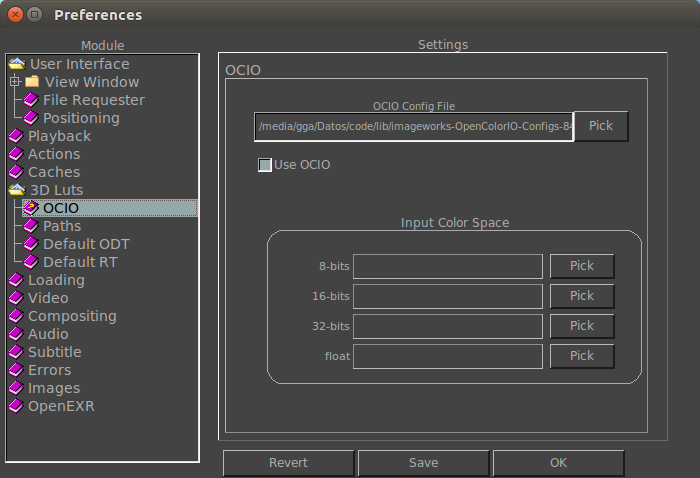

|  |
OCIO PreferencesWhen this option is active, the image input color space will by default be shown in the main toolbar instead of the exposure controls. Note that you can toggle this at any time if you use SHIFT+i .
These allow setting the input color space for each image's bit depth. The environment variables are: MRV_OCIO_8bits_ICS, MRV_OCIO_16bits_ICS, MRV_OCIO_32bits_ICS, MRV_OCIO_float_ICS. |